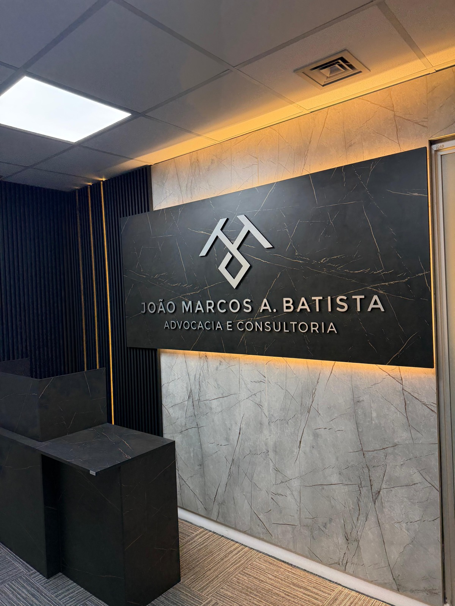
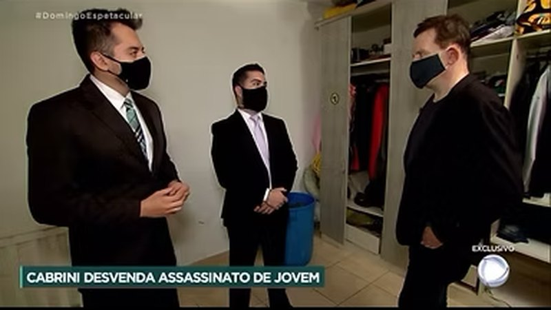

01
Criminal Defense
Defense at every stage — from investigation and arrest to appeals before the Superior Courts, including jury trials and financial crimes.
Criminal practice →Criminal & Tax Law — São Paulo, Brazil
From arrest to Brazil's Superior Courts. From tax assessments to the CARF tribunal.
24/7 emergency line for arrests

Criminal emergencies
After an arrest in flagrante, the custody hearing takes place within 24 hours — and that is where release is decided. Having a defense lawyer from the very first moment changes the course of the entire case. Our emergency line answers any time, every day. A lawyer guides the family, follows the arrest paperwork and acts immediately at the custody hearing.
Practice areas
Criminal and tax law with technical depth — and command of the intersection between the two.
Defense at every stage — from investigation and arrest to appeals before the Superior Courts, including jury trials and financial crimes.
Criminal practice →Tax planning, credit recovery, strategic installment agreements and administrative and judicial litigation — including CARF.
Tax practice →Criminal defense for foreign nationals in Brazil, in English and Spanish. Included in the U.S. Embassy's attorney list.
International clients →Economic Criminal Law
Tax assessments and enforcement can evolve into charges of tax crimes, money laundering and crimes against the financial system. Few firms are prepared to play on both boards at once.
That intersection is exactly where the firm concentrates its expertise: a graduate degree in Economic Criminal Law (FGV/SP), training in Finance (PUC/RS), and simultaneous work in tax litigation and corporate criminal defense.
In the press
The firm's work in high-profile cases, as covered by the press.
Messages reveal an abusive relationship between defendant and victim. João Marcos comments as defense counsel.
Watch →Messages suggest premeditation. Defense counsel discusses the investigation live on air.
Watch →
Cabrini reconstructs the case and interviews the defendant alongside defense counsel.
Watch →True-crime documentary series. The firm appears as defense counsel in the case.
Watch →Report featuring victims' stories. João Marcos represents the defrauded customers.
Read article →G1 / Globo TV coverage of the case, from investigation to trial. The firm acted for the defense.
Read article →Analysis of how self-laundering is treated under Brazilian economic criminal law.
Read article →Report on the firm's role in the defense during a high-profile investigation.
Read article →All news →Team
A team dedicated exclusively to criminal and tax law, led by João Marcos A. Batista.
FAQ
Contact a lawyer immediately and do not encourage any statement without defense counsel present. The custody hearing happens within 24 hours and is the first moment release can be argued. Our emergency line guides families from the first call.
The assessment can be challenged administratively — including before CARF — and in court. In many cases the liability can be reduced, paid in installments or offset with credits. Acting within the defense deadlines is essential.
Yes. We act nationwide, including before the Superior Courts in Brasília. Initial consultations can be held by video call or WhatsApp.
Yes. The firm is included in the U.S. Embassy's attorney list in Brazil and works in English, Portuguese and Spanish, including liaison with families abroad and consular offices.
Your case is reviewed in strict confidence and you receive an honest assessment of risks and possible strategies, with fees set transparently before any engagement.
Contact
Neo Corporate Offices
Rua Enxovia, 472 — conj. 1504 e 1505
Brooklin, São Paulo/SP · 04711-030